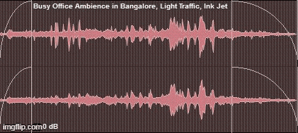

Needless to say, there are many shortcuts in Pro Tools. One does not need to know every shortcut-at least that is what I tell myself. Following are the shortcuts I find useful for the kind of work I do.
| Action | Shortcut (Mac) | Notes |
|---|---|---|
| Delete fades | Control + Command + F |
Select all clips whose fades should be removed, then use the shortcut to delete fades on the selection. To delete every fade in the session, select all clips first. |
